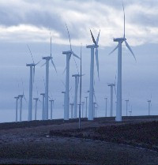
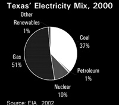
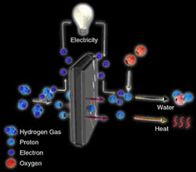
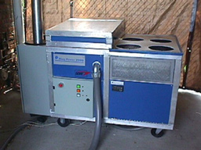
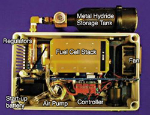
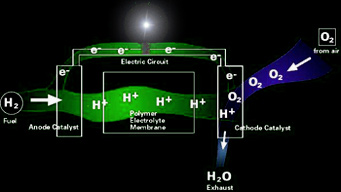

What are Our Alternatives? 21st Century Solutions.
The one thing that is often asked when issues about nuclear energy and radioactive waste are brought up is,
"what are our alternatives?" With Texas wind energy now at an installed capacity of over a gigawatt,
energy production alternatives are available to more than compensate for what
the two nuclear power plants generate. Wind also costs mere three cents per kilowatt and with no billions
in cost overruns that utility partners will pass onto the ratepayer as nuclear plants have demanded
(Austin, Texas only owns 16% of South Texas Nuclear Plant, but 40% of the customer's bills go to paying off
the forced nuclear liability of partnership.) In the sections below, an overview of two key technologies of
wind generation and fuel cells is presented, with links to important related websites. Although we haven't
covered it as extensively, solar power plays an important role in any renewable energy portfolio. It is
already used by 200,000 homes in the United States.
We interpret it's role as a component source rather than a megawatt-producing power source, primarily due to
the superior position of wind in terms of cost. Texas is positioned to lead the nation in solar power as well
as wind, yet wind promises to yield more energy in the long run, and lead the coming energy boom.
So, returning to nuclear issues, we have two main problems to fix. Shutting down and decommissioning the
nuclear power plants should be accomplished as soon as possible, and will depend on not only the will of
legislators to listen to the voter's concerns and act upon their behalf, but will also depend on there being substantial
decommissioning funds accrued to accomplish the task. Power plant owners are supposed to donate to
a decommissioning account at least yearly to provide for these costs. In the late 1980s, it was revealed that
the existing monies were grossly insufficient to cover the costs. Considering that the plants
loose more money while operational than not, we believe that it would be conservative to close down the plant
and arrange decommissioning as soon as possible. The State of Texas will need to take initiative and
oversee these proceedings closely, so that companies involved do not position themselves to avoid resposibility
in the matter, leaving the financial burden to taxpayers. Here, it is the general public's responsibility to educate
themselves and convey their view to their elected representatives.
Nuclear waste should be stored onsite where produced. Overwhelming evidence indicates that over 95% of what is
considered "low-level" waste comes from nuclear power plants, and that the remaining 5 percent of waste generated yearly
generally decays in a short amount of time, and does not require shipping for disposal or isolation.
The miniscule amounts of waste which do require isolation could be stored at the shut down plant with the majority
of The State's radioactive waste. High-level waste, the spent fuel remaining at the reactors, should also remain where it is,
in cooling ponds on-site. In order to protect against attacks, the onsite fuel storage facilities should be in fortified bunkers
with thick concrete able to withstand large aerial impacts. Spent fuel can'not be transported with such armor, and transport casks
have been discovered to be vulnerable to rocket attack. With the nation's concern over terrorist attacks, this emphasizes that
keeping the waste on-site is a wise idea.
In a nutshell, we propose phasing our nuclear power plants out and replacing them with wind generators and fuel cells in
proven-efficient cogeneration circuits feeding the Texas grid. This will help to bail the economy out of the budget crisis
as the energy boom exports out of state. Since shutting down the plants will eliminate generation of most long-lived radioactive wastes,
the proliferation of nuclear waste dumps will most certainly be more unecessary than they already are. No compact dump necessary, nor an experiment with "assured isolation."
Renewable Energy Solutions: Wind Power in Texas

|
Texas' renewable energy potential is enormous - more than 10 times
greater than all electricity sold in Texas. Texas has the capacity to produce 10% of the nations energy with wind power.
Texas is now third in the world in wind generator installations. With such an abundance of natural
resources, Texas can be a global leader in the renewable energy field
much as it has dominated the 20th century's experience with fossil fuels.
Texas wind power generators have been able to deliver wind power to
the grid wholesale for less than 3 cents per kilowatt-hour. With nearly 280
megawatts of output, the $300 million King Mountain Wind Ranch, located on a
3,141-foot mesa to the northeast of McCamey, generates more power than any other
wind farm in the world.
Texas Wind Industry Vital Statistics - Estimates for 2002
| Number of Texas Counties with Wind Projects | 10 |
| Installed Capacity | 1,103 Megawatts |
| Taxable Value of Wind Power Plants | $777 million |
| Property tax payments to local school
districts | $11.6 million in 2002 |
| Landowner Royalty Income | $2.5 million in 2002 |
| Wind-related jobs (direct) | 2,500 |
|
Largest Wind Power Projects in the U.S.
| Rank | Name | Location | Size(MW) |
| 1 | King Mountain | McCamey, Texas | 278.2 |
| 2 | StateLine | Washington/Oregon | 262.0 |
| 3 | U.S. Windpower | California | 161.0 |
| 4 | Desert Sky | McCamey, Texas | 160.5 |
| 5 | Green Ridge Power | California | 159.9 |
| 6 | Woodward Mountain | McCamey, Texas | 159.7 |
| 7 | Trent Mesa | Sweetwater, Texas | 150.0 |
Sources: Virtus Energy, AWEA
Wind energy could provide 20% of America's electricity (the share currently
provided by nuclear plants) with turbines installed on less than 1% of its land
area. Texas, South Dakota, and North Dakota have enough wind to provide
electricity for the entire United States. In addition to conserving other fuel
sources and reducing pollution, switching to renewables could save
the US economy over $1 trillion a year.
Economic Benefits from Wind Power
| | Currently in 2002 | Texas RPS-2009 | Target 10%-2020 |
| Installed Megawatts | 1,103 | 2,000 | 13,400 |
| Wind in Electric Supply | 1.0% | 1.7% | 10.0% |
| Direct Wind-related Jobs | 2,500 | 3,200 | 8,500 |
| Additional Indirect Jobs | 2,900 | 3,700 | 9,800 |
| Payroll Value of Direct Jobs | $75 million | $96 million | $255 million |
| Landowner Royalties (annual) | $2.5 million | $4.6 million | $30.8 million |
| Local Taxes (annual) | $13.3 million | $26.4 million | $216 million |
| Value of Wind Energy (annual) | $101 million | $199 million | $1.4 BILLION |
KEY ASSUMPTIONS:
(1) Data for 2002 based on actual data (EIA, tax office data, FPL Energy) or best estimates by Virtus Energy.
(2) Wind-related jobs in 2020 assume robust, diversified in-state manufacturing; based on job intensity for
Denmark; indirect jobs based on Texas Comptroller estimates.
(3) Landowner royalties assume 2.5% royalty, 35% capacity factor and 3 cent/kWh contact price.
(4) Local taxes assume total rate of 2.51%; no abatements; declining balance method; inflation equal 2%.
The success of the Texas wind industry in 2001, nearly 913 MW in a single year, makes
the 2009 Texas RPS goal appear small in comparison. If Texas were to simply match the
level of activity demonstrated in 2001 it would result in more than 18,000 MW of wind
capacity in 2020 - considerably in excess of the 13,400 MW needed to achieve 10% of
electric production in 2020. Moreover, additional renewable energy resources such as
solar and biogas are expected to make valuable contributions in the decades ahead.
Texas is emerging as a surprising world leader in wind power. Fewer than
six years after the state's first commercial utility-scale wind power plant
was installed north of Van Horn, wind power is bringing about a general
economic boom for rural Texas, delivering royalty income to landowners,
substantial tax revenue for schools and creating quality
long-term jobs.
Wind-Related Jobs
Construction of a Texas wind farm
requires intensive effort of up to 300 workers during a period spanning
six to twelve months. Blades for wind turbines are manufactured in the Dallas-Ft Worth area, and
Houston saw $1 billion in traffic of wind power equipment (in 2001?).
Combined with Texas-based manufacturing and
services, the Texas wind industry employed more than 2,500 workers
during 2001. After construction, wind plants retain employees to
manage and operate the site for the life of the wind farm.
Landowner Income
Wind power plants typically lease land
and pay the landowners a share of their revenue. Annual royalty payments
are usually about 2.5% of gross income, or roughly $2,000 per
wind turbine. During the next 25 years, the current crop of Texas wind
farms is projected to make royalty payments in excess of $60 million
to rural Texas landowners.
Local Taxes, School Funding
Capital-intensive wind power plants pay substantial property taxes,
predominantly in rural areas. Even in the early years, the Texas wind industry is providing
millions annually to support public education in communities across the state, as this sample
of estimated payments to local school districts in various counties reflects:
• Pecos County (Iraan-Sheffield ISD, Buena Vista ISD) = $4,809,000
• Upton County (McCamey ISD) = $2,750,000
• Taylor County (Trent ISD) = $1,131,000
• Carson County (White Deer ISD) - $856,000
Source: based on tax office data for 2001-2002
The current crop of wind projects already in Texas are projected to pay more than $225
million over their lifetime to support various county services, hospitals, fire departments,
water districts, and community colleges as well as local school districts.
The potential of wind to
quickly become a significant source of school funding in rural areas is powerfully
demonstrated by Pecos County. In just one year, nearly $300 million in wind assets
added 14% to the county's total tax base. This sizable boost is particularly impressive
since Pecos County already has considerable taxable assets consistent with its top-10
ranking among Texas oil producing counties.
Texas' Renewable Energy Potential
| Resource | Generation (billion kWh) |
% of 2000 Electricity Sales |
| Wind | 1,663.1 | 527% |
| Solar | >315.7 | >100% |
| Bioenergy | 30.2 | 10% |
| Landfill Gas | 2.4 | 1% |
Texas has the technical potential to
generate more than 6 times its current electricity needs from
renewable energy. The resources with the greatest potential in
Texas are wind and bioenergy. Texas also has excellent solar
resources that could theoretically provide all of the state's
electricity supply. While not all of Texas' renewable potential
will be developed due to economic, physical and other
limitations, the national renewable energy standard will spur
significant development in Texas.
|
 |
Current Electricity Mix
Texas relies heavily on natural gas, coal and
nuclear power for its electricity. All of the nuclear fuel and over half of
the coal is imported into the state, exporting dollars and jobs in the
process. In 2000, homegrown renewable energy sources such as wind
and bioenergy (plants and clean plant wastes such as prairie grasses or
crop wastes) provided a small amount of the electricity generated in
Texas. The record-setting installation of over 900 megawatts of wind
power in 2001, due to the state renewable energy standard and federal
production tax credit, increased non-hydro renewable energy use to just
over 1 percent of the electricity generated in Texas.
The renewable electricity
standard will reduce air pollution from power plants that
threaten people's health by burning coal, oil and natural
gas. Carbon dioxide emissions, which trap heat in the
atmosphere and cause global warming, would also be
reduced. Nationally, the renewable energy standard will
reduce about 27 million metric tons of carbon emissions
a year by 2020, not including emissions from uranium fuel processing.
The renewable standard will also reduce
harmful water and land impacts from extracting,
transporting, and using fossil fuels or radioactive materials.
|
The federal renewable energy standard would increase
total renewable power in Texas to over 6,600 megawatts (MW) by 2020.
Texas' strong winds would
produce enough electricity to meet the needs of nearly 2 million typical Texas homes, and reduce the use of fossil
fuels. New data on wind resources in Texas not included in the U.S. Energy Information Administration's
NEMS computer model indicate that the prospects for wind
development may be even greater.
Through 2020, the national standard would produce these economic benefits to Texas: (net present value shown)
• $2.1 billion in new capital investment
• $185 million in new property tax revenues for local communities
• $86 million in lease payments to farmers and rural landowners from wind power
Renewable Portfolio Standard: A Texas Success Story
Currently, more than $1 billion of new
wind development is building the tax
base in rural west Texas and supporting
manufacturing jobs statewide. And since
the fuel is free, capital-intensive wind
power plants create more jobs and pay
more property taxes per unit of electricity
produced than coal or natural gas.
One of the primary catalysts for this has been the
Renewable Portfolio Standard (RPS),
a cutting-edge policy that delivers clean,
low-cost energy while providing
economic benefits and jobs statewide.
The Texas' Renewable Portfolio Standard,
signed into law by Gov. George Bush in
1999, specifies that 2,000 Megawatts of
new renewable capacity will be built in
Texas by 2009. The Texas Public Utility
Commission, then led by current FERC
Chairman Pat Wood, crafted detailed
rules for the program with a marketbased
system of tradable renewable
energy credits. This clear-cut policy
encouraged construction of some of the
world's largest wind power projects that
now deliver clean energy at prices lower
than ever before achieved. The current
cost competitiveness of wind power has
Texas five years ahead of its renewables
construction schedule, almost half way
to meeting its 2,000 Megawatt goal.
RPS assures that retailers of electricity acquire modest amounts
of renewable energy. Creation of a minimum, long-term market
has proven an effective catalyst for rapid development of renewable
energy resources.
Experience with the Texas RPS shows that utilities with RPS
requirements liked what they saw in renewables and bought
twice the mandated amount (an extra 300 megawatts). Those
private utilities not subject to an RPS requirement remained
wary of renewables buying only one megawatt collectively.
The Production Tax Credit (PTC) is a federal incentive that rewards production of energy rather
than construction of equipment. Nominally set at 1.5 cents
per kilowatt-hour, the PTC allows environmentally benign
wind energy to be cost competitive with dirtier options.
The federal production tax credit coupled with RPS-driven
economies-of-scale result in wind power being a viable, cost-competitive
electric option.
The advent of RPS and tradable renewable energy credits, make
the lowest cost renewable resources available to all, enabling
voluntary programs to provide better value to customers.
An Achievable Goal - Policy Recommendations
Renewables can create more economic opportunities if
Texas decision-makers continue to support its growth.
With a few straightforward policy initiatives, wind
power could be directly responsible for more than 8,000
jobs, provide more than $200 million annually in local
taxes, and compensate $30 million each year to
landowners in windy regions. When the multiplier effect
of the indirect activity stimulated by wind-generated
wealth is considered, these benefits can be expected to
increase substantially. Consistent, effective support is
needed to tap the potential renewables have to offer, and a
target of a mere 10% renewable energy
production is easily achievable in Texas with the right policies:
• Incentives for renewables: extending the production tax credit long-term (5+ years).
• Adoption of a federal Renewable Portfolio Standard (RPS) with tradable
renewable energy credits to stimulate development in the most cost-effective
regions of the country.
• Adding transmission infrastructure to move wind generated
power to cities; With more power lines, low-cost electricity from
West Texas' wind fields can be harvested and
directed to where energy is needed.
From providing jobs and a growing rural tax base, to
delivering enhanced energy security and diversity,
Texas stands to benefit more than any other state
from consistent renewable energy policies.
In light of the tremendous benefits derived from clean,
homegrown energy supplies, it would be unfortunate if Texas - home to some of the lowest
cost wind power in the world - was not prepared to seize this opportunity.
Consistent Renewables Policy: A Tale of Two Nations
Denmark, with a size and population roughly equal to
greater-Houston, has championed consistent policies that
have fostered more than 20,000 permanent wind related
jobs. Consistency has its rewards. In 2001, companies
from Denmark supplied 60% of the wind turbines
installed in Texas, worth more than $300 million. In
contrast, cyclical support for renewable energy in the
Unites States stifles the domestic wind manufacturing
sector discouraging new investment. In 2001, uncertainty
regarding continuation of the federal production tax
credit triggered a U.S. layoff cycle that furloughed
more than 500 Texas workers.
Top 7 Wind Turbine Companies From The 1980's: Where They Are Today
| Rank | Company | Nation | Status of Company in 2002 |
| 1 | US Windpower | USA | Bankrupt - 1996 |
| 2 | Vestas | Denmark | #1 in World; stock up 600% since 1998 IPO |
| 3 | Fayette | USA | Defunct - 1993 |
| 4 | NEG Micon | Denmark | #4 in World; stock up 400% since 1997 |
| 5 | Flowind | USA | Bankrupt - 1997 |
| 6 | Mitsubishi | Japan | #13 in World; small part of huge company |
| 7 | Bonus | Denmark | #5 in World; Privately held, earnings up 260% since 1998 |
Rankings based on statistics for California, which represented 88% of the World market during 1981-1989.
Status in 2002 from BTM Consulting world market share rankings and investor relations data.
Texas Wind Employee Layoffs, 2001
| Company | Location | Layoffs |
| Trinity Structural Towers | Ft. Worth | 310* |
| Molded Fiber Glass | Gainesville | 130 |
| Bergen Southwest Steel | El Paso | 90 |
| Vessel Technology | Longview | 25 |
* Includes sub-contractor layoffs
Wind Power Internet Resources
Public Citizen, Texas Office
Seed Coalition
(Sustainable Energy and Economic Development)
Hydrogen Fuel Cells
|  |
Fuel cells generate electricity from a simple electrochemical reaction
in which oxygen and hydrogen combine to
form water. A fuel cell is around 60 per cent efficient at converting fuel to power, double the
efficiency of an internal combustion engine. Companies are hoping to bring real fuel cell products to the market in 2003.
In the future, portable direct methanol fuel cells could power mobile phones, laptops and cameras.
Residential fuel cells should become available in small numbers from 2003 to 2004.
They should become available to the public soon afterwards.
Nine pounds of water yields one pound of hydrogen plus eight pounds of oxygen.
A pound of hydrogen yields about 61000 btu, and 2 pounds of hydrogen is equal to a gallon of gas.
So, with a fuel cell solution, 18 pounds of water can yield the equivalent of a gallon of gas.
There are several different types of fuel cells but they are all based around a central design which consists of two
electrodes, a negative anode and a positive cathode. These are separated by a solid or liquid electrolyte that carries
electrically charged particles between the two electrodes. A catalyst, such as platinum, is often used to speed up the
reactions at the electrodes.
|
The history of the fuel cell can be traced back to the nineteenth century.
Since then the development and the usage of fuel cells in various applications have come a long way.
William Grove invented the fuel cell in 1839, and in 1859 Francis Bacon demonstrated a 5kW alkaline fuel cell.
Almost 100 years later, General Electric invented proton exchange membrane fuel cells in the 1950s, and the
first "commercial" use of fuel cells was by NASA in the 1960s during the Apollo space missions.
Alkaline fuel cells have flown over 100 missions and operated for over 80,000 hours in spacecraft operated by NASA.
Because fuel cells are quiet, reliable, and clean, and produce water as a by-product, NASA developed fuels
cells as the ideal supply of both power and drinking water for the astronauts. And when used in electrolysis mode,
fuel cells had the added benefit of producing breathable oxygen and hydrogen for rocket fuel.
The US Navy has used fuel cells in submarines since the 1980s.
Iceland is planning to convert its fishing fleet from diesel engines to hydrogen fuel cells as part of a
national project to create a fossil fuel free economy.
If hydrogen and oxygen were simply mixed as gases at room temperature, nothing would happen. Exposing these gases to a spark would cause them
to combust. Fuel cells, however, can control the release of the energy contained in these gases in regulated electrochemical
reactions. Because there is no combustion, there is no emission of pollutants such as nitrous oxides, sulfur oxides, or particulates into the
air.
In the fuel cell, a semi-porous electrolyte separates the hydrogen and oxygen and keeps them from
combining, but allows the gas ions to pass through so that electrochemical actions can occur. These actions separate the electrons from the
hydrogen atoms on one side of the fuel cell. The severed electrons are forced to travel a separate circuit to rejoin the oxygen on the other
side of the fuel cell, forming water or water vapor. While being drawn through this separate circuit, the electrons create electrical power.
The Application of Fuel Cells
So far fuel cell manufacturers have focused on non-residential applications. UTC Fuel
Cells, currently the only commercial supplier of fuel cells, has installed over 250 phosphoric acid
fuel cells (PAFC) at a range of sites, including schools, office blocks and banking facilities. In the
future, high temperature fuel cells, such as molten carbonate (MCFC) and solid oxide (SOFC), may be
adapted for larger industrial applications and MegaWatt-scale power generation. With operating
temperatures between 600-1100°C these high temperature cells can tolerate a contaminated source of
hydrogen and hence can use unreformed natural gas, diesel or gasoline. Furthermore, the heat generated
can be used to produce additional electricity by driving steam turbines.
Fuel cells can be installed in private households and light commercial operations as well as meeting all the energy
requirements of large industrial operations with efficiency and low emissions.
There is
significant potential for smaller units in what is termed residential applications (typically below
20kW). All the heat and power requirements of private households or small businesses could be met by
low temperature proton exchange membrane (PEM) or solid oxide fuel cells (SOFCs). Units could power
individual houses or groups of homes and could be designed to meet all of the energy requirements of
the inhabitants, or only the base load, with peaks of demand being met from the electrical grid.
Initially at least, in most cases natural gas will provide a source of hydrogen fuel. However,
manufacturers forecast alternative sources of fuel will be used in the future that may help to reduce
emissions even further and take fuel cells into new niche markets.

Fuel cells also promise to be an important source of power for mobile electronic devices, offering key
advantages over conventional batteries, such as increased operating times, reduced weight and ease of
recharging. At present most research has focused on a variation of the low temperature proton exchange
membrane (PEM) fuel cell, the direct methanol fuel cell (DMFC). As the name implies these fuel cells
run on a methanol-water mix fed directly into the unit without prior reforming. Using methanol, DMFCs
offer a great advantage over solid batteries in that recharging will just involve refilling with the
liquid fuel.
Military applications are expected to be a significant niche market for fuel cell technology. Their
efficiency, versatility, extended running time and quiet operation make fuel cells extremely well
suited for the power needs of military services. In various forms, fuel cells could provide power for
the majority of military equipment from portable handheld devices used in the field to land and sea
transportation.
Fuel Cells for Automobiles
All major car manufacturers already have prototypes on the road; the first few fuel cell cars have been leased to customers.
Many companies are hoping to produce their first semi-commercial models of fuel cell cars from 2003-2005. However, it is
unlikely that fuel cell cars will be mass produced until 2010 at the earliest.
Fuel cell technology promises to meet the most stringent emissions legislation. However, if fuel cells are to replace the
internal combustion engine, it must not only surpass these requirements, but also provide solutions
that offer similar levels of convenience and flexibility to the end user.
Fuel cells that will drive vehicles must be able to
reach operating temperature rapidly, provide competitive fuel economy and give a responsive performance.
Proton exchange membrane (PEM) fuel cells are best placed to meet these requirements. With a low operating temperature, around
80°C, PEM fuel cells can reach operating temperature quickly. Able to respond rapidly to varying loads, these fuel cells can
offer efficiency of up to 60% compared to the 25-30% achieved by internal combustion engines. PEM fuel cells also have the
highest power density from the current fuel cell range, a crucial factor when space maximisation is such an important
consideration in vehicle designs. Furthermore, the solid polymer electrolyte helps to minimise potential corrosion and safety
management problems.
One potential hindrance is fuel quality. In order to avoid catalyst poisoning at this low operating temperature PEM fuel cells
need an uncontaminated hydrogen fuel. Most major vehicle manufacturers regard the PEM fuel cell as the successor to the
internal combustion engine, and on the road testing is well underway, using a range of vehicles and locations.
PEM fuel cell buses are running in several cities around the world.
Currently, the largest fuel cell bus demonstration program is the European Union-backed CUTE project
(Clean Urban Transport for Europe).

Types of Fuel Cells
Fuel cells are classified according to the nature of the electrolyte.
Each type requires particular materials and fuels and is suitable for different applications.
Regenerative Fuel Cells provide the greatest promise for research and development of renewable energy,
as they have an infinite recharge life, discouraging disposal and almost entirely employ and discharge
non-toxic materials.
Proton Exchange Membrane Fuel Cells (PEMFC) -
The proton exchange membrane (PEM) fuel cell uses a corrosion-free polymeric membrane as the electrolyte with platinum electrodes. These cells operate
at relatively low temperatures (200°F) and can vary their output to meet shifting power demands. These cells provide a continuous electrical
energy supply at high levels of efficiency and power density and are the best candidates for cars,
for buildings and smaller applications. The PEM fuel cell is also sometimes called a polymer electrolyte fuel cell (PEFC).
Regenerative Fuel Cells (RFC) -
This class of fuel cells are the combination of a fuel cell and a hydrogen generator that also has hydrogen storage capability.
Run in one direction, fuel
cells act like electrical generators, but when run in reverse, they generate hydrogen and oxygen. This would allow a system to generate
electricity for the electric power grid during periods of high demand, and generate fuels during periods of lower demand. They will likely
replace rechargeable batteries in the future. Like a rechargeable battery, small regenerative fuel cells could be recharged at any time by
plugging into a wall socket. The hydrogen produced can be stored in metal hydrides for later use in stand-alone electrical generation. Since
the chemical reaction capacity in a fuel cell is not used up as with chemical batteries, regenerative fuel cells have an infinite recharge
life, meaning you could them buy once and never face a disposal issue. Regenerative fuel cells can use any fuel cell to generate electricity,
allowing the use of the most efficient and inexpensive technology.
Alkaline Fuel Cells (AFC) -
The alkaline fuel cells have been used on every NASA space mission, and use an alkaline electrolyte such as potassium hydroxide and require no rare
metal catalyst. Companies have reported efficiencies from 52% stand-alone and as high as 70% with cogeneration. They have a low operating
temperature of 140°-200° F and can start generating at temperatures down to -40° Fahrenheit. Because the electrolyte is a liquid, if
circulated, it can provide excellent cooling and water management within the cell.
Direct Methanol Fuel Cells (DMFC) -
As a relatively new type of fuel cell, the direct-methanol fuel cell (DMFC) is similar to the PEM cell in that it uses a polymer membrane
as an electrolyte. However, a catalyst on the DMFC anode draws hydrogen from liquid methanol (or alcohol in some cases),
eliminating the need for a fuel reformer. Therefore pure methanol can be used as fuel. This has led some to consider this the chief
competitor to the PEM cell for transportation. There is currently a large effort
to develop DMFCs for battery replacement in cell phones, computers, and military use. Efficiencies are about 40% running at operating
temperatures of 120-190° F, with higher efficiencies at higher temperatures.
Molten Carbonate Fuel Cells (MCFC) -
These were developed in the 1960s to run on coal-based fuels. The liquid electrolyte is made up of
cells composed of a
mixture of lithium carbonate and potassium carbonate and is contained in a porous and chemically inert lithium-based matrix, which makes it a
good ionic conductor at the fuel cells' operating temperature of 1200° F. As a high temperature technology, carbonate fuel cells are capable
of "internal reforming" -- that is, hydrogen molecules are stripped from the fuel stream within the fuel cell stack itself. Because of this
feature, carbonate fuel cells are capable of operating directly on virtually any hydrocarbon fuel -- e.g. natural gas, wastewater digester
gas, coal gas, methanol, diesel, etc. This significantly reduces the complexity of the design and eliminates the need for external reforming
components upstream of the fuel cell stack.
Carbonate fuel cells are also one of the most efficient technologies available today -- approximately 50% electrical efficiency. Recovery of
the 750° F cogenerated heat stream can push overall efficiencies to 80% or higher. This technology is well-suited for applications in the 200
kW to 10 MW size range. Carbonate fuel cells are available today for commercial field trials and are expected to become broadly available in
the marketplace over the next two years.
Phosphoric Acid Fuel Cells (PAFC) -
A phosphoric acid fuel cell (PAFC) consists of an anode and a cathode made of a finely dispersed platinum catalyst on carbon and a
Teflon-bonded silicon carbide matrix that holds the phosphoric acid electrolyte. At 400° Fahrenheit, they operate at
36% efficiency for stand-alone and 85% efficiency in cogeneration. This is the most commercially developed type of fuel cell and is being
used to power many commercial premises. The phosphoric acid fuel cell can also be used in large vehicles, such as buses. Most fuel cell
units sold before 2001 used PAFC technology.
Solid Oxide Fuel Cells (SOFC) -
Solid oxide fuel cells work at even higher temperatures than molten carbonate cells. Instead of a liquid, they use a solid ceramic electrolyte, such as
zirconium oxide stabilised with yttrium oxide, and must be heated to 1800° F to allow the ions to
pass through the ceramic (which is about the same temperature as a home furnace). There are many advantages to the SOFC. First, no fuel
reformer is needed for fuels such as natural gas and propane, as the high-temperature system creates internal reformation. Secondly, there
isn't an issue of fuel contamination, as with other system types that require relatively pure hydrogen. Thirdly, there are no caustic or
molten electrolytes since the SOFC uses a solid ceramic electrolyte. Fourthly, the ceramic electrolyte is cheap and does not require rare
metal catalyst. Finally, this fuel cell unit produces high-grade heat and is ideal for large-scale industrial use as well as home heating and
hot water use. SOFCs are 50% - 60% efficient and can reach 80% - 90% with cogeneration.
| AFC | DMFC | MCFC | PAFC |
PEMFC | SOFC |
| Electrolyte | Potassium hydroxide |
Polymer membrane | Immobilised Liquid Molten Carbonate |
Immobilised Liquid Phosphoric Acid | Ion Exchange Membrane |
Ceramic |
| Operating Temperature | 60-90°C | 60-130°C | 650°C | 200°C |
80°C | 1,000°C |
| Efficiency | 45-60% | 40% | 45-60% | 36-38% | 30-35% | 50-65% |
| Electrical Power | Up to 20 kW | < 10 kW | > 1 MW | > 50 kW | Up to 250 kW |
Up to 1MW |
| Possible Applications | Submarines, spacecraft | Portable applications | Power stations | Power stations | Cars, buses, residential energy supply | Small power stations |
Currently, there is no hydrogen infrastructure to supply coast-to-coast delivery of hydrogen fuel. Technologies are being developed to
provide alternative fuel storage and delivery methods. SOFCs, MCFCs and PAFCs can internally reform natural gas, providing the perfect
solution for industrial use but MCFCs and PAFCs are too large for home and transportation use and SOFCs still have years in development. PEMs
and AFCs can use fuel reformers to convert hydrocarbons, such as gasoline and natural gas, into hydrogen, but this technology can lower the
overall efficiency of the fuel cell by 1/4 and can release small amounts of pollutants. Onboard fuel storage and conversion solutions are
being developed but they are still years from being perfected.
Fuel Cell Internet Resources
Fuel Cells Texas
Fuel Cell Today
Fuel Cells 2k
US Fuel Cells Council
US Hydrogen/American Hydrogen Association
Good Company Associates
InfinitePower.org
from Texas SECO
Texas Solar Energy Society
Texas Electric Choice
- Public Utility Commission of Texas